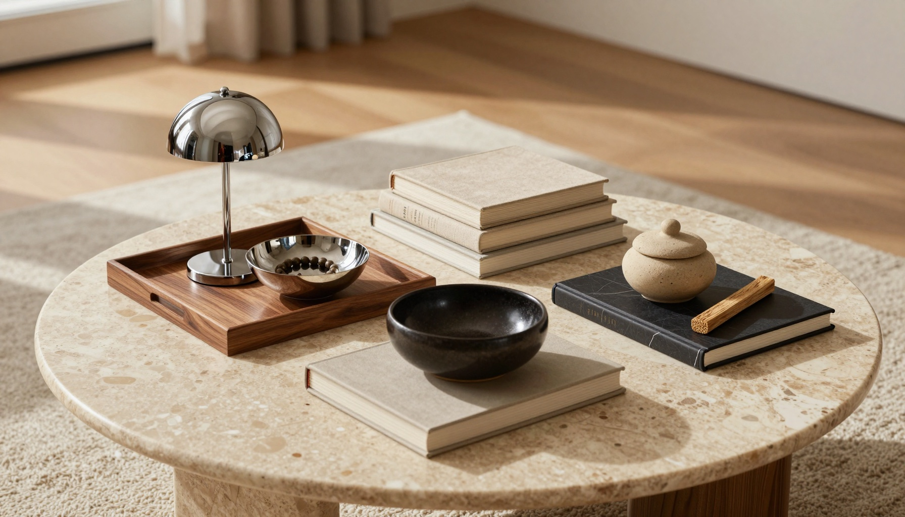
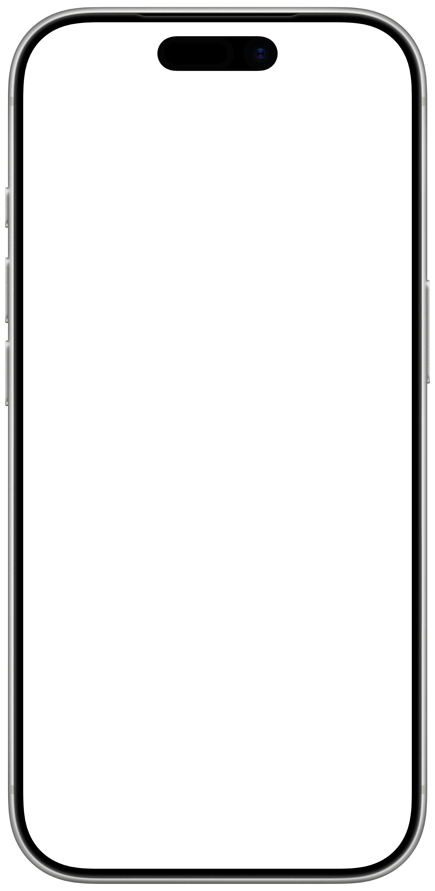
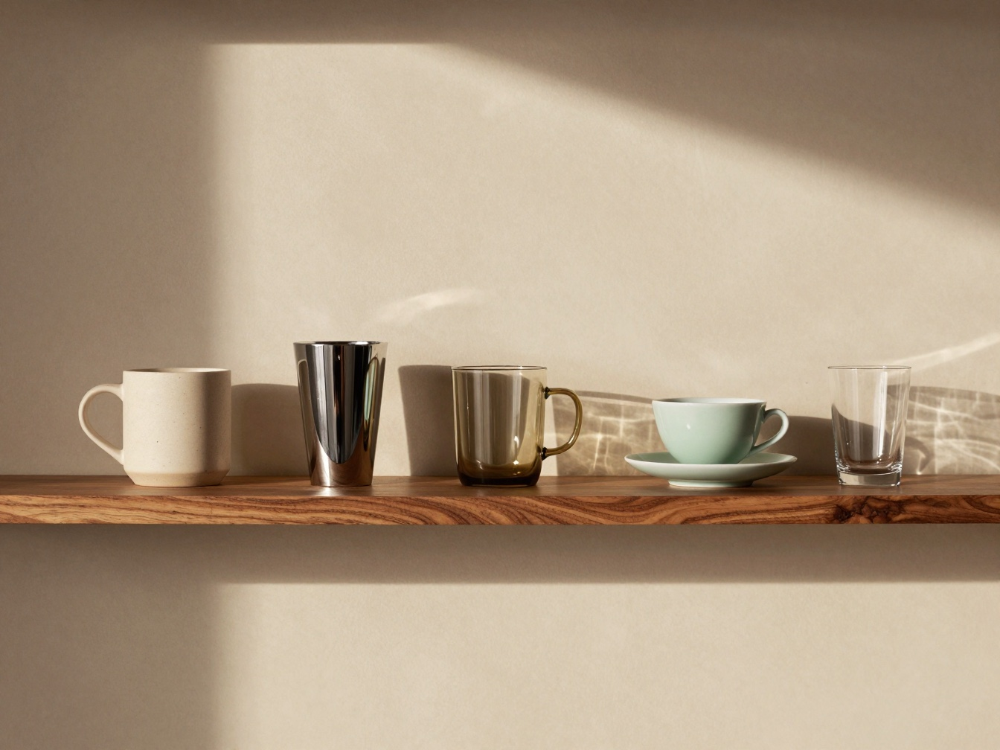
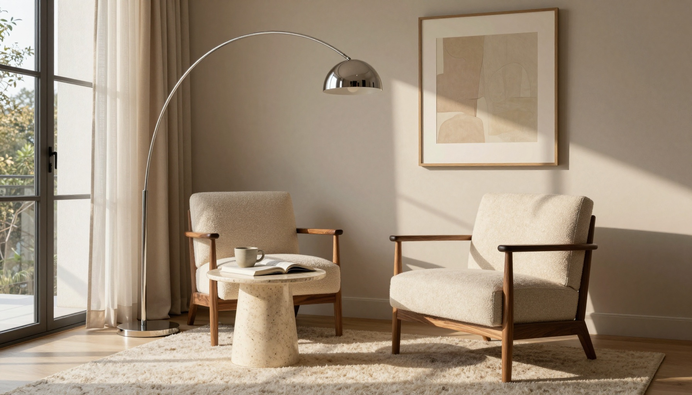

美しく、より自分らしい、誇れる暮らしへ。
OMIT. は、自分の空間を美しく保ち、自分の購買判断を適切に行うための、特定の目的に特化したエージェント。
消費は、
アイデンティティを
象徴する行為。
人間関係、勤め先、生き方、頭に入れる情報。その全部に意図的であれ、と急に求めるのは無理です。けれど消費は誰もがする。自分の稼いだお金で何かを買う時、とくに高い買い物では、誰しも「自分にふさわしいか」を考えます。
そして物理的な空間は、頭の中より把握しやすい。片付けても物がまた出てくるのは、意志力が足りないからではなく、正確な置き場が無いことや、買い方の癖にあります。
だから OMIT. は、空間と、物を買うという意思決定から始めます。

- 0日本の YouTube で、ルームツアーの最上位の再生数
- 0世界で、空っぽの部屋を作り替える動画の再生数
- 本人自分で飾った場所の人が一番働きやすく、他人が上書きすると効果が減った
出典: 2026-09-11 の調査（YouTube の公開の再生数）／Knight & Haslam, Journal of Experimental Psychology: Applied, 2010
見せて、話すだけ。
OMIT. が見て、覚えて、見立てを言う。決めるのはあなた。
-
1

家を見せる
スマホを回しながら、声で話す。OMIT. が物と、あなたの言葉を覚えます。
-
2
いいなと思ったら、共有するだけ
お店の頁でも、写真でも。気になる物を指で囲むと、OMIT. が覚えます。
-
3
店で迷ったら、見せる
家の物とあなたの言葉を並べて、OMIT. が提案を一つ。買うかどうかは、あなたが決めます。
使い続けるほど、
深くなる。
一度記録して終わりでは駄目です。人の価値観や好みは変わっていくので、OMIT. は定期的に更新していきます。重要なのは、使うことでどう変わるか。
-

本人が覚えていられない物
昔の自分の言葉。家じゅうの、同じ役目の物とのつながり。そして時間。
-
買う時の支え
間違った購入をしない。無駄な消費を抑える。店で迷った時、家の物とあなたの言葉が、その場に並びます。
-
使い続けると見えてくる物
最初の直後、一か月、三か月、一年。物の位置と出入り、決めたこと、あなたの言葉から、OMIT. が組みます。
育つのは、あなたの判断です。
使うほど、OMIT. が聞く回数は減っていきます。
空間と、買う判断の、
専任。
何でも聞ける窓ではありません。引き受ける仕事を一つに絞り、その分だけ深くします。
| 項目 | OMIT. | 汎用の AI チャット | 片付け・持ち物のアプリ | Pinterest・メモ |
|---|---|---|---|---|
| 家の物と、あなたの言葉を覚えている | ✓ | — | ✓ | — |
| 店で品物を見せると、家の物と並べて考える | ✓ | — | — | — |
| お店の頁や写真から、気になる物だけを囲んで入れる | ✓ | — | — | 保存はできる |
| いいなと思った物を、似たテイストごとに束ねる | ✓ | — | — | 自分で分ける |
| 決めるのは本人。買うなとも、手放せとも言わない | ✓ | — | — | — |
| 広告が無い | ✓ | 物による | 物による | — |
| 物を売る会社から、お金を受け取らない | ✓ | 物による | 物による | — |
| 空間の映像と声を、保存しない | ✓ | 物による | 物による | — |
OMIT. の列は、OMIT. の決まりそのものです。ほかの列は、それぞれの種類の一般的な作りを指しています。

自分の空間を、
大切にしている人へ。
自分の空間をより本質的なものにしたいと思っている人にも、既に自分の空間に誇りを持っている人にも。最初に誰か一人を選ぶことはしません。人で絞らず、引き受ける仕事を一つに絞ります。
どれだけ意図的になりたいかは、人それぞれです。好きか嫌いかを感じる。なぜ好きなのかを言える。素材や押し心地、作り手の歴史や設計の思想まで知って、関係を深める。どこまで行きたいかに合わせて、OMIT. が接し方を変えます。
- 1好きか嫌いかを、感じる
- 2なぜ好きなのかを、言える
- 3素材や作り手まで知って、関係を深める
二週間、無料で。
その先は、ひとつの購読。
いつでもやめられます。やめた後も、自分の記録は見られます。
- 広告はありません
- 物を売る会社から、お金を受け取りません
- 買い切りの販売はしていません
気になることに、答えます。
iPhone と Android、どちらで使えますか
iPhone で使えます。Android 版も作っています。
撮った映像と声は、どこへ行きますか
OMIT. はどこにも保存しません。読ませる先の AI が、悪用の見張りのために一定の期間だけ持ち、学習には使いません。最初にカメラを開く前に、そのことを伝えて同意をもらいます。残るのは、あなたが残すと決めた物の切り抜きと、あなたの言葉だけです。
毎日、写真を撮らないといけませんか
いいえ。毎日は撮らせません。通知が来た時に見せるだけで、間隔は空間ごとに OMIT. が決め、あなたも変えられます。見せたい時は、いつでも見せられます。
OMIT. は、買うのを止めますか
止めません。家の物とあなたの言葉を並べて、提案を一つ出すだけです。買う・保留・やめるを決めるのは、あなたです。手放せ、とも言いません。
何でも相談できますか
いいえ。答えるのは、持ち物の世界と、目の前の品物のことまでです。引き受ける仕事を一つに絞っています。
無料で使い続けられますか
恒久の無料の枠はありません。二週間の無料の試用の後は、購読だけです。
OMIT.